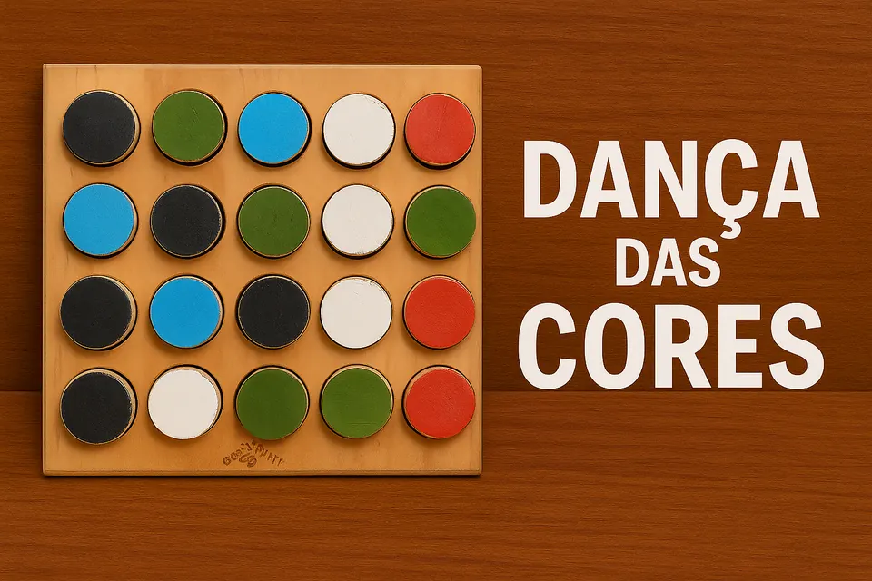
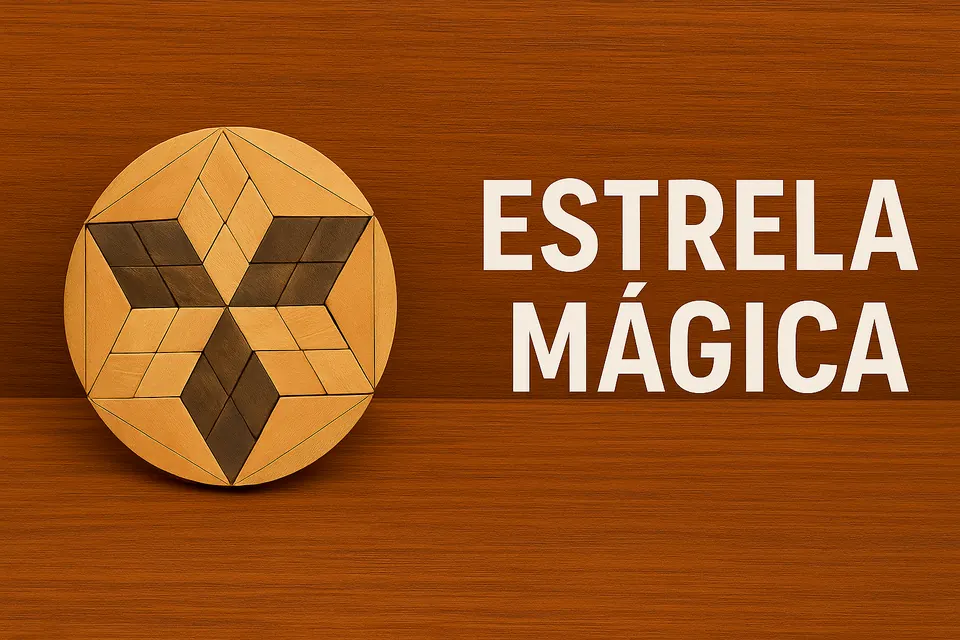

Estratégia
Estratégia
Quixo
Retire um cubo da borda, marque-o e empurre uma fileira: cada jogada modifica todo o tabuleiro.
Catálogo educativo
Jogos de estratégia, brinquedos de habilidade e quebra-cabeças de montagem. Escolha pelo tipo de desafio, experimente e torne o caminho da solução tão importante quanto a resposta.
Importante: errar não é falhar no jogo; é produzir informação para a próxima tentativa.
O jogo não ensina sozinho
Coleção
Pesquise pelo nome, habilidade ou tipo de experiência.
15 jogos exibidos
Estratégia
Retire um cubo da borda, marque-o e empurre uma fileira: cada jogada modifica todo o tabuleiro.
 Habilidade
Habilidade
Um brinquedo de habilidade em que a bola é recebida nos copos ou encaixada na ponta da haste.
 Desenlace
Desenlace
Cordão, argola e estrutura parecem inseparáveis, mas uma sequência de movimentos pode mudar essa relação.
 Montagem 3D
Montagem 3D
Peças formadas por pequenos cubos devem ocupar todo o volume de um cubo maior, sem vazios nem sobreposições.
 Estratégia
Estratégia
Identificado no acervo como “Senhoritas Chinesas”
Leve suas peças até a ponta oposta da estrela, criando cadeias de saltos e caminhos eficientes.
 Montagem 3D
Montagem 3D
Arquivo anterior: “Travas dos Heróis para Montar”
Uma estrela formada por peças entalhadas só se desmonta e remonta quando a sequência correta é encontrada.
 Montagem 3D
Montagem 3D
Organize peças tridimensionais dentro de uma moldura alta, controlando orientação, camadas e espaços vazios.
 Lógica
Lógica
A abertura depende de descobrir peças móveis e uma sequência de ações, não de encontrar uma fechadura visível.
 Montagem 3D
Montagem 3D
Peças entalhadas formam uma estrutura rígida que depende de uma peça-chave para começar a desmontagem.
 Desenlace
Desenlace
Uma bola parece presa dentro da estrutura; o desafio é compreender as passagens e restrições do mecanismo.

PadrõesDiscos coloridos podem ser reorganizados para reproduzir, completar ou inventar padrões no tabuleiro.

MontagemPeças geométricas devem reconstruir uma estrela dentro do contorno circular, conciliando bordas e espaços internos.
 Lógica
Lógica
Mova os veículos apenas no sentido em que estão orientados até liberar a saída para o carro-alvo.
 Desenlace
Desenlace
Uma argola envolve o cilindro e parece bloqueada; a solução depende de compreender folgas, percurso e peças móveis.
 Habilidade
Habilidade
Lance a peça presa pelo cordão e tente recebê-la no copo ou encaixe do cabo com controle e ritmo.
Tente outra palavra ou selecione “Todos”.
Proposta de uso
Um quebra-cabeça pode virar apenas passatempo ou uma situação rica de aprendizagem. A diferença costuma estar nas perguntas feitas durante e depois.
Considere mobilidade, tempo disponível, número de participantes e o tipo de raciocínio que deseja observar.
Ofereça pistas graduais. Mostrar a resposta cedo demais fecha o problema como quem fecha um livro na melhor página.
Depois da tentativa, convide a pessoa a explicar o que pensou, o que mudou e qual hipótese abandonou.
Sobre o catálogo
Alguns itens têm regras publicadas por fabricantes ou associações. Outros são brinquedos de madeira sem marca, manual ou identificação precisa. Nesses casos, as páginas apresentam guias de exploração e deixam explícito o que precisa ser confirmado no exemplar.
Essa distinção é importante: uma descrição bonita, mas falsa, é como uma peça colocada à força — pode até parecer que encaixou, porém compromete toda a estrutura.